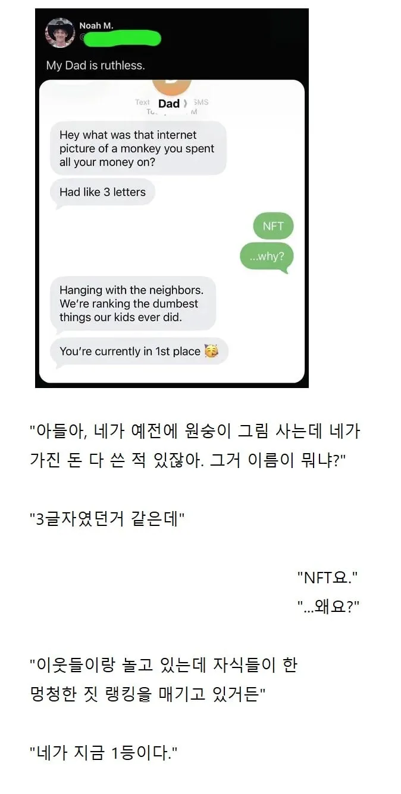

ㅠㅠㅠㅠㅠㅠㅠㅠ
그거 산놈들 걍 부자들 돈지랄 한거라 별생각 없을듯 ㅎ
아님 코인 투자하듯이 일반인들도 믾이 삼
그 그림의 NFT를 1,000조각으로 나눠서 소액투자가 가능했다는걸 아는 사람:
성공하면 비트코인 실패하면 nft아니겠습니까
아 ㅋㅋㅋㅋ
뱅크시요
3letters? That's "USA" itself
USA plays like a monkey these days...
You're currently in 1st place
MAGA is the best all the time! (이제 미국 비자는 글렀다 😭)
아빠, 그거 이름은 NFT고요. 지금 가치는 그 세 글자보다 쌀요
삼전기요
예전에 나도 투자하고싶어서 NFT 책도 읽고 그랬는데...
친구도 사서 카톡프사걸어놨었는데 ㅋㅋㅋ
캡쳐해서 프사설정하려다 참았었음
희대의 병신짓이라고 생각함 진짜.
디지털 이미지를 소유한것도 아닌데 최초 만들어질 당시의 정보를 가지고 있는게 무슨 가치가 있으며 그게 억대까지 올라간것도 어이가 없고
난 아직도 내가 이해한 그 NFT 개념이 진짜 맞는지 모르겠음. 말이 안 되잖아.
난 비트코인 이후로 이런 소리 안한다
지금에야 효용성이 어쩌고 보안이 어쩌고 다르다 어쩌고 하겠지만 다들 처음에 나올 땐 뭔 개소리임 했음
딸깍하면 똑같은게 무한으로 생겨나는 디지털세상에서
가치를 독점하고 싶어하는 틀딱레거시부자들을 홀리기 위한 거대한 스캠이지
예전에 NFT/메타버스 프로젝트 준비 중인 회사에서 일해봤음...
1. NFT로 양도되는 권리가 불분명함. 소유권 증명이라는데 정확히 뭘 소유한다는 건지 애매함. 토큰을 보유하는 거랑 연결된 그림의 저작권을 갖는 건 다른 얘기임. 계약으로 저작재산권이나 이용 권한을 줄 수는 있지만, 그건 계약의 효과지 NFT 자체의 기능은 아님. 이거 때문에 기획자랑 같이 논의 많이 함. "그래서 우린 뭘 파는거에요?"
난 중간에 런쳤고 프로젝트 자체는 무산됨.
2. NFT가 자동으로 진품보증서가 되는 것도 아님. 이미지형 NFT를 단순화하면 대충 이런 구조임.
토큰: 어떤 계약에서 발행한 몇 번 토큰
보유자: 0x어쩌고 지갑
연결된 이미지: https://www.dogdrip.net/imagestorage/734228226
이전 기록: 어느 지갑에서 어느 지갑으로 넘어갔는지
저 주소는 구조 설명용 예시임. 실제로는 이미지 주소 등이 담긴 메타데이터를 연결하는 식이고, 그림 자체가 블록체인에 들어가는 건 아닐 수 있음. 외부 서버에 있는 그림이면 관리자가 바꾸거나 내려버릴 수도 있음.
https://x.com/neitherconfirm/status/1369285946198396928
물론 변경 못 하게 설계한 NFT도 있음. 핵심은 NFT라고 원본 보존이 자동 보장되지는 않는다는 거임. 남의 그림으로 발행하는 것도 기술적으로 가능해서 발행자가 진짜 원작자인지는 별도로 확인해야 함.
3. 만드는 사람 입장에서도 이게 왜 NFT여야 하는지 존나 정당화하기 어려웠음. 스캠 말고 실제 기능을 구현하려고 해도 “아니 이걸 왜 굳이 NFT로?”라는 질문에 내부적으로 답을 못 함. 무역처럼 여러 기관이 기록을 공유하는 분야에 활용할 여지는 있지만, 그것도 NFT가 필수인 건 아니고 법적 효력이나 기관 간 합의는 따로 해결해야 함.
4. 토큰이 남는다고 쓸모까지 남는 것도 아님. 게임 아이템을 NFT로 샀는데 게임이 섭종하면 토큰만 남고 쓸 곳은 사라질 수 있음. 다른 게임으로 가져간다는 것도 그쪽 개발사가 받아주고 구현해야 가능한 얘기임. 결국 이런 구조에서는 탈중앙화라고 해놓고 정작 돈 주고 산 기능은 운영사에 계속 의존함. 실제로 NFT 게임 관련 컨퍼런스에서 “게임 망하면 그 NFT는 어디에 씀?”이라고 물어본 적 있음. “유저들이 자유롭게 새로운 활용 방법을 찾을 수 있다”는 식으로 답하고 추가 질문은 안 받더라. 결국 돈 받고 파는 건 자기들인데, 게임 망한 뒤 쓸모는 유저가 알아서 찾아야 한다는 소리로 들렸음.
메타버스는 게임형식이라도 아무튼 뭔가 개념이 있는데
NFT는 처음듣자마자 이건 사기다 하는 생각밖에 안들더라 ㅋㅋㅋㅋㅋ
영수증이잖아
찾아보니까 가장 싼애가 최저가 1500만정도고 비싼건 아직도 비싸긴한데
Nft 가지고 있는 애들중에 bayc 가지고 있는애들이 자존심이 좀 쌘느낌 저거 들고있으면 뭐 요트파티도 초대받아서 무료로 하고 그래서 그런가 ㅋㅋㅋㅋㅋ
국내에선 원더걸스 선미 nft가 원탑임 ㅋㅋㅋ 뭐 이거도 시세는 꼴아박았지만..
나도 nft도 만들어보고 사고 팔기도 해보고
한때 몇억 정도 가치까지 들고있기도 했고
결국엔 원금 회수도 하고 지금은 거의 다 뺏지만
그래도 지금 nft 50개 이상은 들고있는데
Nft를 특별하다고 생각하지 말고
일종의 거래 편의성 개선관점에서 생각하면 편함
어떤 nft가 기존에는 불가능한 어떤 기술을 구현할 기대를 가지는게 잘못된거고
그냥 어떤 복제가 불가능한 디지털 쪼가리다!
라고 생각하면 편함
복제가 불가능한 디지털 쪼가리니까
메이플스토리 월드(한국에서는 플레이불가능)에서도 모든 아이템이 nft로 발행되니 게임 외적으로도 템 거래가 가능하고(이게 절대 대단하거나 그렇다는게 아님 신기술이다 대박이다 이런 기대를 버려야함)
뭐 딱 그정도인거지
큰 기대를 하는거 자체가 잘못됐다고봄
Nft가 중요한게 아니라 그안에 들어있는 컨텐츠가 중요한거지
신세계백화점 혜택주는 푸빌라 nft도 nft가 중요한게 아니라 신세계에서 어떤 이벤트를 하는지가 중요한거임 nft에 환상갖지마라
???: nft는 복사불가능한 어쩌고
윈도우 캡처도구 딸깍
그래도 인생에 첫 승리를 맛보긴 했네
근데 요즘은 실물 미술품에 대해서도 NFT토큰 발행해서 지분소유개념으로 투자함. NFT 자체가 문제가 있는게 아니라 그게 표상하는 대상이 씹스캠인게 문제지
통상적인 자산유동화를 블록체인통해서 하는거랑 뭐가달라
난 지금도 저 NFT라는게 뭔지 모르겠음 저게 왜 유행했는지 저걸 왜 돈주고 사는지도
코로나 초기 나한테 메타버스가 얼마나 대단하고 세상을 어떻게 바꿀거라며 틈만나면 연설을 해대던 50대 여부장이랑 비슷한 맥락인듯
적당히 듣다가 그거 중학생 때부터 게임에서 다들 하던거라고 했었는데 ㅋㅋㅋㅋㅋ
인터넷에 떠도는 원본의 첫 복사본이 너라는걸 인증해주는거임 존나 쓸모없음 ㅋㅋㅋㅋ
A가 디지털 데이터(B)를 생성함
그걸 몇시 몇분 몇초에 누가 어디서 어떻게 생성했다는 증표를 블록체인에 올림. (아니면 처음 생성할때부터 블록체인 통해서 생성하던가... 정확한건 나도 모르겠음)
그 증표를 인터넷에 팜.
A가 생성한 B에 대한 '증표'만 팜.
B에 대한 권리는 여전히 A한테 있음.
내가 이해한 NFT는 이건데... 진짜 저 증표를 가따 어따쓰겠다고 하는건지 진짜 아직도 이해가 안됨.
롤렉스 시계에 대한 영수증만 사온 꼴. 그 영수증을 시계보다 비싸게 주고 받고 하고 있으니 기가 찰 노릇
이제 B랑 증표랑 같이 사는거임
그럼 B도 온전히 내것이고 내것이라는 증표도 가지는거
롤렉스 시계랑 보증서랑 다 사는거임
보증서는 조작이 불가능함
이렇게가 다 맞는말이고 이것만 들으면 좋은 기술같은데
정작 롤렉스시계는 복사가 됨
보증서도 조작이 안되는거지 똑같은 보증서는 복사할 수는 있음
물론 그 보증서랑 시계를 들고 이거 진짜다 라고 주장해봐야 이거 영수증에 이름이 너가 아닌데? 하고 바로 들키겠지만 그게 뭔상관임?
시계가 그냥 복제되는데
롤렉스의 기술이 아직 발전하지 않았는데 영수증 기술이 한참 먼저 개발된 느낌?
진정한 NFT는 미술품아님?
소유권도 있어 걸어놓을 수 있어 만질 수도 있어
Are ya winning son?